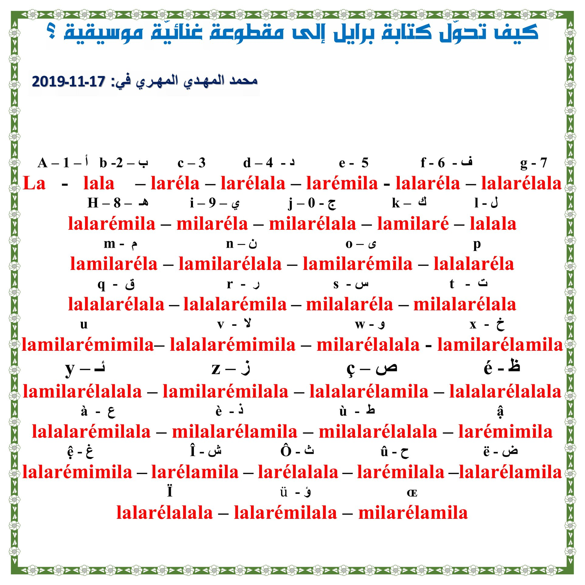
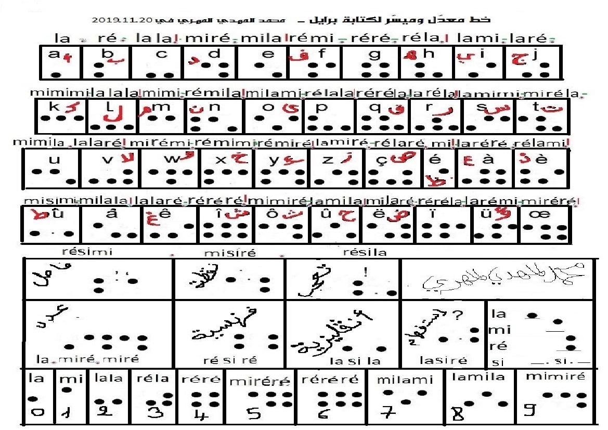
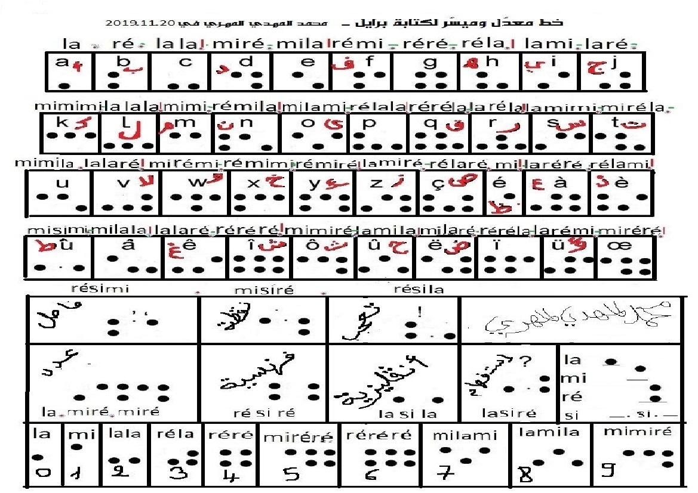

How it works
This is a modified Braille writing that enables us to ditch compeletely the use of numbers to determine the actual points of the six places where the punctuation can be made - for example to assign the points of the letter T we say (2,3,4,5), while 1 and 6 are two blank punctuation, and the modified writing is read in width Rather than length, letters are designated by order of points on the line, so we say about writing H for example: point, point over, point - and writing s: we say: two points, two points, a point - and we only have to define these three capabilities (point, point over, two points) Consequently, we get rid of numbers and consider the empty points, and the letter does not take from the space except what it occupies - in addition We note that we will reduce the use of points and dispense with considering empty positions in the points assigned to letters - and this book gives the possibility of converting them into lyric sounds (point la and point over mi and two points ré) - and in addition to all of this we will not need new tools, for example with regard to the student. Turn the board on which he writes, grasping the width instead of the length, and cutting out a line relative to the lines assigned to the letter - and the visually impaired (extremely weak) may find it easier to learn this writing by touch - because it is continuous on one line and does not exceed three points.
 
